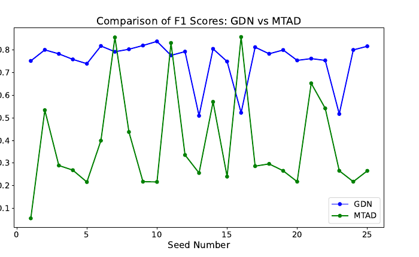

VLAAD
A lightweight collision-aware plug-in that learns temporally localized risk representations from captioned driving video.
Read projectSelected research in visual learning, anomaly detection, representation structure, and uncertainty quantification.
A lightweight collision-aware plug-in that learns temporally localized risk representations from captioned driving video.
Read project
Testing whether the predictive penalty of exact group models comes from the group laws—or from how the models are fitted.
Read project
A critical analysis of how window size, random seeds, and normalization can dominate reported anomaly-detection performance.
Read project
Using SVM regression as a surrogate for Monte Carlo circuit simulation, with substantially fewer training samples.
Read project